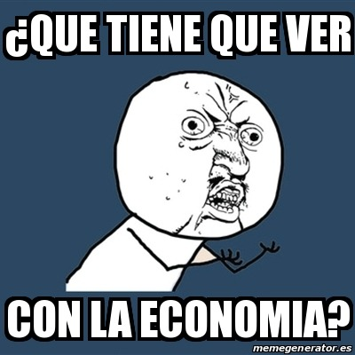

En un mundo impulsado por la interconexión global, la economía desempeña un papel fundamental en la toma de decisiones tanto a nivel individual como en la escala más amplia de naciones y mercados. Aquí en Krapulitos.INC, te invitamos a explorar este fascinante universo económico a través de la perspicacia y experiencia de [Nombre del Economista], un experto cuyos conocimientos han dejado una huella perdurable en la teoría económica y la práctica en todo el mundo.
YORCHI es un referente en la comunidad económica, con décadas de dedicación a la investigación y análisis económico. Con una visión única y un enfoque que abarca desde la macroeconomía hasta los detalles más específicos de los mercados, [Nombre del Economista] ha sido un faro de sabiduría en un mar de datos y tendencias económicas en constante evolución.
Nuestro objetivo es difundir el conocimiento económico de Krapulitos.INC y ayudarte a
comprender mejor cómo afecta a tu vida cotidiana. Explora artículos, conferencias, entrevistas y más para
enriquecer tu comprensión de la economía y estar mejor preparado para tomar decisiones informadas en un
mundo en constante cambio.
¡Únete a nosotros en esta emocionante travesía para descubrir el mundo económico a través de los ojos de un
experto! Juntos, aprenderemos, reflexionaremos y nos inspiraremos en la economía y su impacto en nuestro
entorno.